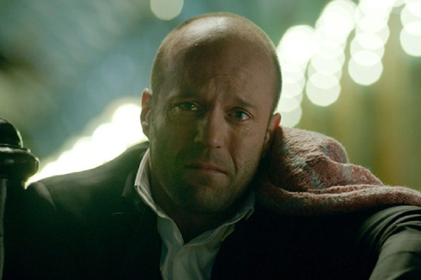

Соболезную Брат, ты не выиграл
Но я хочу, чтобы ты знал, как я горжусь тобой и тем, как ты боролся и стремился к победе. Помни, что
поражение -
это не конец, а лишь шаг на пути к успеху. Ты проявил силу, упорство и отвагу, и это говорит о тебе больше,
чем любой трофей.
Важно не то, как много раз ты падал, а то, как ты вставал и продолжал идти вперед. Каждый опыт, даже если он
кажется неудачным, - это урок, который делает нас только сильнее. Ты уже доказал, что можешь достигать
великих вещей, и я без сомнения верю, что перед тобой откроются новые возможности для побед.
Помни, что я всегда здесь ради тебя, чтобы поддержать, подбодрить и помочь в любой ситуации. Мы вместе в
любом случае, в победе и поражении. С нетерпением жду того, чтобы увидеть, какие вершины ты покоришь дальше.